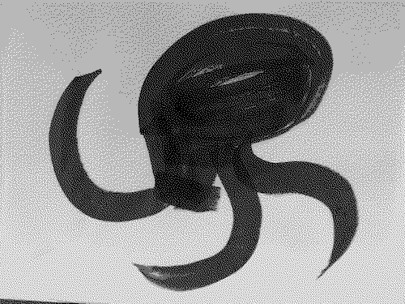
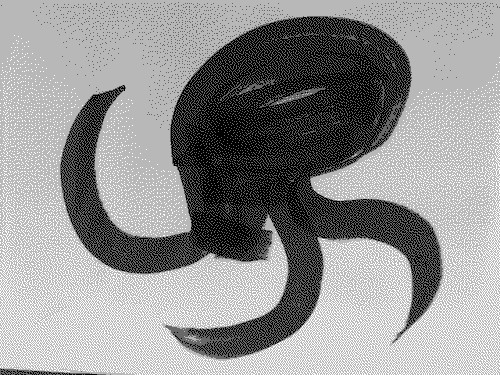

For this year's Inktober I'm planning to do brush ink drawings. I'll use these drawings scaled down as sprites in a game I'm working on for the PlayDate platform. This will be my first attempt at game development, so I'm keeping it very simple and I'm still deciding about gameplay ideas.
The general idea is that you can play as 4 different animals, in 4 different scenes, moving your character around to try to optimize an outcome. Inktober seems like a great time to generate graphics for these different scenes, so I'm not following the official prompts.
Here's the subject matter plan:
- Octo
- Shark
- Hawk
- Owl
- Wolf
- Bear
- Frog
- Snake
- Urchin 1
- Urchin 2
- Coral 1
- Coral 2
- Seashell 1
- Seashell 2
- Rock 1
- Rock 2
- Ocean floor
- Cloud 1
- Cloud 2
- Cloud 3
- Grassland 1
- Grassland 2
- Water
- Shore
- Rat 1
- Rat 2
- Bull
- Tree 1
- Tree 2
- Insect 1
- Insect 2
I'll be posting these to Mastodon. Hopefully all goes well and I'll have a retrospective to post here at the end.
 
